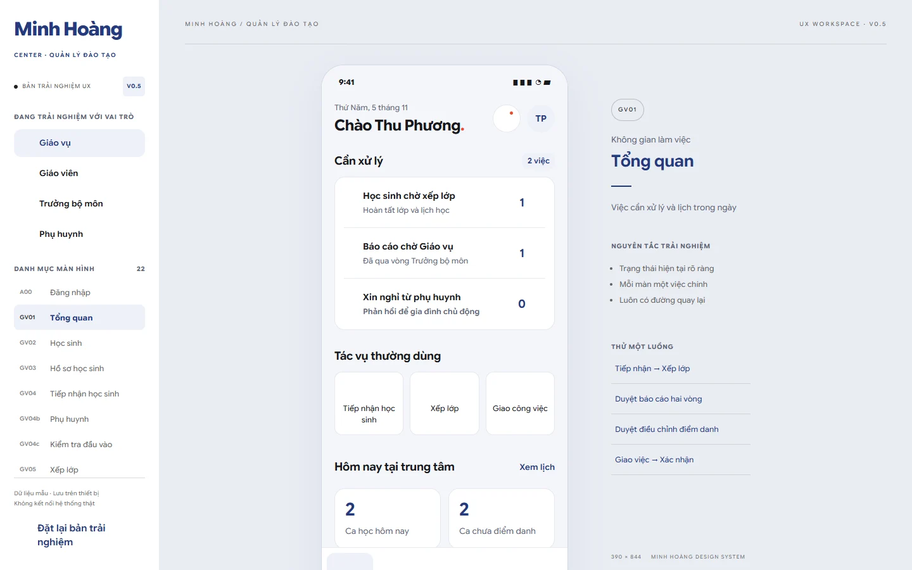

EDUCATION & LEARNING
Minh Hoàng Center
Connect scheduling, attendance and report approval across administration, teachers, department leads and parents.

Four roles, one training operation
Minh Hoàng Center is the Biz browser prototype for administration, teachers, department leads and parents. My scope covers cross-role flows, responsive UI and interaction states.
Keep schedules and approvals in sync
Attendance, teaching schedules and reports can be read differently across roles. The design connects decisions to the relevant learner, class and approval state.
Different responsibilities and visibility
Administration coordinates classes and approvals. Teachers record attendance and reports. Department leads review. Parents see information scoped to linked children. The role switch is a prototype review control.
Supplied brief and traceable artifacts
The source links the October 2026 brief, screen inventory, design references and verification matrix. These support the product model and implementation scope.
Screen inventory ↗ · V0.5 redesign ↗ · Verification matrix ↗
Role workspaces with shared records
The main navigation adapts to the selected role. Schedule, attendance and reports remain connected through the same learner and class references.
A report crosses role boundaries
Teacher drafts and submits → department lead reviews → administration makes the final review → published information appears in the parent workspace. Returned work carries a reason.
Keep locked work reviewable
Teachers can request changes to locked attendance. Administration reviews the request instead of silently overwriting attendance. The parent view uses published information.
Iteration from the role inventory
V0.5 consolidated the Minh Hoàng visual direction, reorganized overviews around urgent work and grouped forms by responsibility. The source documents earlier visual trials and the redesign.
Operations overview
The capture shows the administrative overview, with role context, tasks and shortcuts around the main work area.
Review on phone and desktop
The phone layout uses a narrow task view. The desktop preview makes screen navigation and role context available alongside it. The prototype models draft, submitted, returned and published reports.
Browser and verification evidence
The administrative and parent routes were inspected in Chromium. The repository documents syntax, logic and browser checks and records the supported role boundaries.
Implemented scope and remaining evidence
Data stays in the current browser. A live service would need secure authorization and shared persistence. Direct observation with each role would help evaluate whether approval language and visibility match center practices.